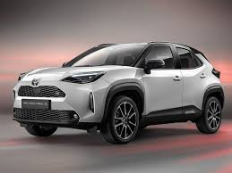

Toyota Yaris Cross 2024

Подробное описание
| Характеристика |
Значение |
| Тип кузова |
Кроссовер |
| Двигатель |
1.5L Hybrid |
| Мощность |
116 л.с. |
| Коробка передач |
Вариатор (e-CVT) |
| Привод |
Передний или полный |
| Расход топлива |
3.8 л/100км |
| Количество мест |
5 пассажиров |
| Стоимость |
от 2 100 000 руб. |
Основные преимущества
- Экономичность: Гибридная установка с низким расходом топлива
- Компактность: Идеальные размеры для городской эксплуатации
- Проходимость: Увеличенный клиренс 170 мм
- Технологичность: Современная мультимедийная система
- Безопасность: Комплекс систем Toyota Safety Sense
- Практичность: Вместительный багажник 390 литров
Комплектации
- Base: Базовая комплектация с гибридной установкой
- Comfort: Климат-контроль, камера заднего вида
- Style: Легкосплавные диски, мультимедийная система с большим экраном
- Premium: Полный привод, кожаный руль, датчики парковки
Группа: Б9123-09.03.04(3) | Разработчик: Панухник А. А.